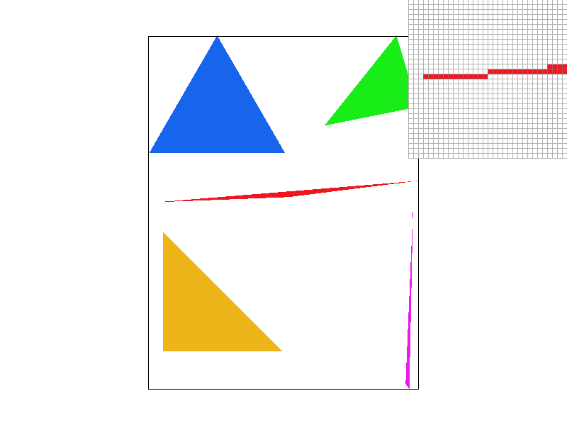
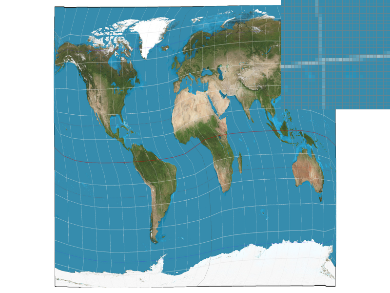

src: https://github.com/D7ry/cs184-proj-writeup/blob/master/proj1/writeup.md
In this project, our group built a functional rasterizer that supports 2D textured geometries. The rasterizer also supports features such as super-sampling and 2D transformations.
In addition, the user could choose from 3 different mipmap texture sampling methods, as well as 2 different pixel sampling methods.
This project has greatly enhanced our understanding of 2D graphics, as well as our interest in delving further deep into the field of computer graphics. It has also prepared us for future C++ projects by honing our skills with tools like cmake and Visual Studio.
I created my own Triangle_2D class and a bunch of structs to keep things organized and well cached to be used later; The following only shows the functions and variables needed for part 1.
Class Triangle_2D
{
Vector2D p0, p1, p2; //points constructing this triangle
Edge e0, e1, e2; // Edge struct of the triangle, containg ptrs to the vectors that construct them
float minX, minY, maxX, maxY; //bounding box
// for implementation 1
bool isInside(float a_x, float a_y);
// for implementation 2
bool getHorizontalRayHit(float a_y, float& a_xBegin, float& a_xEnd);
bool getVerticalRayHit(float a_x, float& a_yBegin, float& a_yEnd);
};
Triangle_2D takes in 6 coordinates to construct.
I've also defined a sub-struct Edge, which simply contains 2 vectors, and a line normal of the edge, calculated at initialization and will be used for Rasterization.
enum GeometricRelation
{
IN,
OUT,
ON
};
struct Edge
{
float a, b; //slope and constant, if the edge were to be repesented in a 2d coordinate.
float xMin, yMin, xMax, yMax;
Vector2D* src; Vector2D* dst; // ptr to the vectors constructed this edge; vectors are stored in Triangle_2D
Vector2D lineNormal; // line normal vector
Vector2D v; //relative vec from src to dst
inline GeometricRelation getGeometricRelation(float a_x, float a_y);
Edge(Vector2D* a_src, Vector2D* a_dst);;
};
With the above abstraction, later tasks are much more modular and easier to implement.
Implementation 1 is simple; it involves the following steps:
float minX, minY, maxX, maxY; of the Triangle_2D class.Edge structs has the function getGeometricRelation(float a_x, float a_y)` which outputs whether the absolute coordinate(A_X, A_Y) is inside/outside/on the halfplane constructed by the edge.getGeometricRelation(), which checks the sign of the dot product of the edge's line normal and the point vector; if all geometric relations indicate that the point is inside the half-plane, the point is inside.Implementation 1 is no worse than sampling every triangle in the triangle bounding box because it does exactly that.
Here's an image rendered using implementation 1:
Implementation 2 differs from implementation 1 in that it only samples 2 precise points for each sample unit, then fills in the pixels without sampling.
The detailed algorithm goes as follows:
Triangle_2D::getVerticalRayHitand Triangle_2D::getHorizontalRayHit, which looks for the intersection between pairs of linear functions.Here is a graphical illustration of the algorithm:
Theoretically, this implementation has O(n) speed with n being the min(width, height) of the triangle's bounding box, compared to the O(n2) complexity of implementation 1. The performance improvement is most noticeable under bigger resolutions.
Here is a timing comparison(in ticks) between the 2 implementations, both rendering test3, the dragon svg file, under 2560*1440 resolution.
The numbers below are the differences in std::clock() before and after DrawRend::redraw() invokes SVG::draw().
| Native(2K) | 9x SS(8K) | 16x SS(32K) | |
| Sample Everything | 32 | 182 | 309 |
| 2D Raycast | 12 | 31 | 48 |
further optimizations such as divide-and-conquer can still be made to lower the complexity to O(log2n); we plan to implement them in the future.
Rasterization by sampling inevitably causes jaggies and artifacts around high-frequency samples. Super-sampling(SS) is the most naive yet effective way to reduce them: SS simply samples a scaled-up version of the original geometry and scales the sample back down, combining multiple sampled pixels into one, resulting in a much smoother image.
Without super-sampling, the rasterizer's sample_buffer is as large as the frame buffer, and drawing onto the frame buffer is a 1-1 mapping process. The rasterization pipeline before SS works as follows:
RasterizerImp::resolve_to_framebuffer().To achieve SS, first, we scale the width and height of the sample_buffer by the square root of sample_rate,
which made the sample buffer able to contain sample_rate times framebuffer worth of pixels. Algorithmically, this is done by calling samlpe_buffer.resize(width * height * sample_rate), as samlpe_buffer is stored as a 1D vector.
The pipeline now looks like this, with green highlighted being the added steps:
Triangle_2D, scale up the coordinates of the triangle, each by sqrt(sample_rate)sample_rate times as many pixels from the sample buffer, and draw the average of the sample pixels' colors onto the frame buffer.The following is the helper function called in resolve_to_framebuffer(), in place of the direct Color col = sample_buffer[y * width + x]; to draw the average of the sample pixels' colors onto the frame buffer:
constexpr float sample_rate_inv(float sample_rate) {
return 1.f / sample_rate;
}
// Get a color at framebuffer's (X, Y) coordinate, from the sample buffer.
Color RasterizerImp::get_color(size_t x, size_t y) {
if (x >= width || y >= height || x < 0 || y < 0) {
return Color::White;
}
Color c;
size_t buffer_x = x * sample_stride; // sample_stride = sqrt(sample_rate)
size_t buffer_y = y * sample_stride;
for (int j = buffer_y; j < buffer_y + sample_stride; j++) {
for (int i = buffer_x; i < buffer_x + sample_stride; i++) {
c += sample_buffer[j * sample_width + i];
}
}
// Average the color.
c *= sample_rate_inv(sample_rate);
return c;
}
The following are images rendered without SS and with incrementing levels of SS, from 4x to 16x:
|

|

|
|
The result of the supersized-averaged-downsized image has much smoother edges. This is because pixels on the frame buffer now convey a much more accurate representation of the original geometry, taking into account the average of details missed in none-SS rasterizations, such as the sharp triangular edge that no-ss rasterization lacked the precision to sample.
Transforms allow creators to easily manipulate geometries, creating different combinations. Here is a transformed cube man:
For the following parts, texture sampling functions are implemented as lambdas, whose pointers are passed to:
void RasterizerImp::rasterize_triangle_native(
float x0, float y0,
float x1, float y1,
float x2, float y2,
//Function pointer to return the color at samplebuffer coordinates X and Y
std::function<Color(double, double, Triangle_2D*)> getColor,
//UV coordinates, may be unused
float u0, float v0,
float u1, float v1,
float u2, float v2)
To avoid repetitive code.
Simply put, the barycentric coordinates of a triangle are a 3-dimensional coordinate system to express the relative position of a point, usually within the triangle.
The three coordinates are alpha, beta, and gamma, the sum of which is always 1; in addition, the sum of barycentric coordinates multiplied by the corresponding vertex's coordinates is always the point's absolute position.
Here is an optimized algorithm to calculate the barycentric coordinates of a point within a triangle:
Triangle_2D::getBarycentricCoords(float a_x, float a_y, float& r_alpha, float& r_beta, float& r_gamma)
{
Vector2D v = Vector2D(a_x, a_y);
Vector2D v2 = v - p0;
float d20 = dot(v2, v0);
float d21 = dot(v2, v1);
r_beta = clamp((d11 * d20 - d01 * d21) / denom, 0.0f, 1.0f);
r_gamma = clamp((d00 * d21 - d01 * d20) / denom, 0.0f, 1.0f);
r_alpha = clamp(1.0f - r_beta - r_gamma, 0.0f, 1.0f);
}
Various variables depending only on the triangle are being cached as member variables of Triangle_2D
class Triangle_2D
{
...
Vector2D v0, v1;
float d00, d01, d11;
float denom;
...
}
Triangle_2D::Triangle_2D(...) {
// cache variables
v0 = p1 - p0, v1 = p2 - p0,
d00 = dot(v0, v0);
d01 = dot(v0, v1);
d11 = dot(v1, v1);
denom = d00 * d11 - d01 * d01;
}
Barycentric coordinates are especially useful in texture & color blending. For example, in the following triangle, each vertex has its distinct color of either R, G, or B. Every pixel is colored based on its corresponding coordinates: the closer the pixel is to one vertex(the bigger the corresponding coordinate is), the more of the color of that edge is blended into the pixel. The result is a triangle of smoothly blended color:
A closer look at the coloring algorithm looks as follows:
Color c1, c2, c3; // colors of the vertices
auto getInterpolatedColor = [c0, c1, c2](int x, int y, Triangle_2D* t) -> Color {
float alpha, beta, gamma;
t->getBarycentricCoords(x + 0.5, y + 0.5, alpha, beta, gamma);
return alpha * c0 + beta * c1 + gamma * c2;
};
2D models are simply polygons. One could fill in colors to the polygon, but the polygon still appears to be but a geometry. Think of a polygon as a "canvas"; the artist needs to print as much detail as possible onto the canvas to make it look like a real object. Instead of painting onto the "canvas" pixel by pixel, we first create a new reference painting, texture, and then print the texture onto the model.
Separating the model from the texture allows the model to be easily scalable and modifiable, using algorithms to adapt models of different sizing to the same texture; the process of adapting the texture to the model is called texture mapping.
Adapting texture to model is analogous to adapting geometry to screen space, the latter is done through rasterization by sampling, and the former has a more direct name: pixel sampling.
The idea behind pixel sampling is simple: every pixel of a geometry has a 2D relative coordinate called UV coordinate, which maps to a specific coordinate on the texture. By sampling the texture at the UV coordinate of each pixel using various sampling methods(more on this in Part 6), we can obtain a color for each pixel, and then fill in the pixel with that color.
Nearest neighbor and Bilinear interpolation are two prevalent sampling methods.
While nearest neighbor directly samples the point on texture closest to the given UV coordinate, bilinear interpolation can be seen as the anti-aliasing technique for pixel sampling: It samples the four points closest to the given UV coordinate and then blends the colors of the four points together; the closer the point is to the UV coordinate, the more color from the point gets blended in. The result is a smoother texture at the cost of four times more texture accesses and arithmetic operations.
As discussed above, to obtain UV coordinates, first we obtain the barycentric coordinates of the pixel using the member function Triangle_2D::getBarycentricCoords(float a_x, float a_y, float& r_alpha, float& r_beta, float& r_gamma)
To convert the barycentric coords into UV coords, we perform a blending algorithm similar to color blending discussed in part 4, where we multiply the UV coordinates of each vertex by the corresponding barycentric coordinate, and then sum them up:
void RasterizerImp::Triangle_2D::getUV(float a_x, float a_y, Vector2D& r_uv)
{
float alpha, beta, gamma;
this->getBarycentricCoords(a_x, a_y, alpha, beta, gamma);
r_uv = alpha * uv0 + beta * uv1 + gamma * uv2;
};
Once we have the UV coordinates, proceed to the next stage of the pipeline by calling Texture::sample() with the UV coordinates as a part of the argument.
Texture::sample() then invokes different sampling methods: nearest neighbor and bilinear interpolation, depending on the setting. Note that regardless of the pixel sampling method, we will always be sampling once from the highest resolution texture(mipmap level 0); More sophisticated level sample methods will be discussed in Part 6.
For nearest neighbor, we simply round the UV coordinates to the nearest integer, and then sample the texture at the corresponding mipmap coordinate by scaling the UV coordinates by the mipmap level's width and height.
Color Texture::sample_nearest(Vector2D uv, int level) {
auto& mip = mipmap[level];
return mip.get_texel(round(uv.x * mip.width), round(uv.y * mip.height));
}
As discussed above, bilinear interpolation samples the four points closest to the UV coordinate and then blends the colors of the four points through lerping.
Color Texture::sample_bilinear(Vector2D uv, int level) {
auto& mip = mipmap[level];
float x = uv.x * mip.width;
float y = uv.y * mip.height;
float x0 = floor(x), x1 = ceil(x), y0 = floor(y), y1 = ceil(y);
Color c00 = mip.get_texel(x0, y0);
Color c01 = mip.get_texel(x0, y1);
Color c10 = mip.get_texel(x1, y0);
Color c11 = mip.get_texel(x1, y1);
Color c0 = lerp(c00, c01, y - y0);
Color c1 = lerp(c10, c11, y - y0);
return lerp(c0, c1, x - x0);
}
The following are four screenshots generated using nearest sampling and bilinear sampling at different SS levels, which illustrate their differences:

|
|
|

|

|
As shown through the pixel inspector, regardless of the SS rate, bilinear interpolation delivers a much smoother longitudinal&latitudial line.
Under the native resolution, the lines are intermittent points under nearest neighbor sampling, but the bilinear interpolation method successfully renders the contour of the lines.
Bilinear interpolation still wins under a higher sampling rate; the lines it renders are less jagged than the counterpart.
Looking at the overall picture, bilinear interpolation renders a much smoother image.
Their differences are most noticeable at places where texture color changes abruptly: e.g. near a thin line like the longitudinal&latitudinal line.
The rationale behind is similar to the anti-aliasing technique: the lower the frequency achieved using blending, the smoother the jags-usually occurring at high-frequency areas-are rendered.
As discussed in part 5, texture sampling can have artifacts at high-frequency areas for which the model has less than enough pixels to sample. We've discussed 2 ways to minimize the artifacts: super-sampling and interpolated pixel sampling. "Level sampling" is a third way to do so, which comes with its own set of advantages and drawbacks.
The idea behind level sampling is simple: instead of sampling from the highest resolution texture all the time(as in part 5), we sample from a down-sampled version of the texture (A.K.A. mipmap) depending on the distance between the pixel and the camera. This gives 3 main benefits:
To accommodate for 6 different combinations of level sampling, Texture::sample() has been restructured:
Color Texture::sample(const SampleParams& sp) {
switch (sp.lsm) {
case LevelSampleMethod::L_ZERO: //level defaults to 0
{
switch (sp.psm) {
case PixelSampleMethod::P_LINEAR:...
case PixelSampleMethod::P_NEAREST:...
}
}
break;
case LevelSampleMethod::L_NEAREST:
{
switch (sp.psm) {
case PixelSampleMethod::P_LINEAR:...
case PixelSampleMethod::P_NEAREST:...
}
}
break;
case LevelSampleMethod::L_LINEAR: // most mind-boggling one
{
switch (sp.psm) {
case PixelSampleMethod::P_LINEAR:...
case PixelSampleMethod::P_NEAREST:...
}
}
break;
}
// return magenta for invalid level
return Color(1, 0, 1);
}
Regardless of the specific texture sampling method we use, first, we need to approximate the nearest mipmap level to the pixel by calculating the texture footprint. To do so, we calculate the UV of points next to the point to be sampled and approximate the delta UV.
This is done at the rasterizer part of the pipeline, where we have access to the triangle's UV coordinates:
SampleParams sp;
auto getTexture = [tex, sp](double x, double y, Triangle_2D* t) mutable -> Color {
t->getUV(x, y, sp.p_uv);
// ready x_dUV and y_dUV for mipmap level calculation.
if (sp.lsm != LevelSampleMethod::L_ZERO) {
// look for nearest uv that's not out of bound
int dx = t->isInside(x + 1, y) ? 1 : -1;
int dy = t->isInside(x, y + 1) ? 1 : -1;
t->getUV(x + dx, y, sp.p_dx_uv); // uv of nearest x coordinate
t->getUV(x, y + dy, sp.p_dy_uv); // uv of nearest y coordinate
sp.p_dx_uv -= sp.p_uv;
sp.p_dy_uv -= sp.p_uv;
}
return tex.sample(sp);
};
In the texture sampler part of the pipeline, we take the texture footprint and, using the scaled UV, calculate the mipmap level with the normalized UV:
float Texture::get_level(const SampleParams& sp) {
bool linear = false; // do not round the level if linear.
switch (sp.lsm) {
case LevelSampleMethod::L_ZERO: // always return 0
return 0; break;
case LevelSampleMethod::L_NEAREST:
linear = false; break;
case LevelSampleMethod::L_LINEAR:
linear = true; break;
}
Vector2D dxUV_Scaled = sp.p_dx_uv * width, dyUV_Scaled = sp.p_dy_uv * height;
double L = max(dxUV_Scaled.norm(), dyUV_Scaled.norm()); // norm = sqrt(x**2 + y**2)
float d = clamp(static_cast<float>(log2(L)), 0.f, static_cast<float>(mipmap.size() - 1));
if (linear) { return d;}
else { return round(d);}
}
The level of the returned function is not rounded for bilinear level sampling, which will be discussed later.
Nearest-level sampling is implemented the same as 0th-level sampling. The texture sampler takes the output of get_level() and samples from the mipmap of the corresponding level. get_texel() provides a nice abstraction so we don't need to worry about mipmap's width and height.
case LevelSampleMethod::L_NEAREST:
{
switch (sp.psm) {
case PixelSampleMethod::P_LINEAR:
return sample_bilinear(sp.p_uv, int(get_level(sp))); break;
case PixelSampleMethod::P_NEAREST:
return sample_nearest(sp.p_uv, int(get_level(sp))); break;
}
}
break;
Bilinear interpolated level sampling works analogously to that pixel sampling. Instead of sampling from a single texel, we sample from 2 adjacent texels in the mipmap level, and interpolate the result using lerp():
case LevelSampleMethod::L_LINEAR: // most mind-boggling one
{
float level = get_level(sp);
int l0 = floor(level), l1 = ceil(level); // 2 adjacent levels
Color c0, c1;
switch (sp.psm) {
case PixelSampleMethod::P_LINEAR:
c0 = sample_bilinear(sp.p_uv, l0);
c1 = sample_bilinear(sp.p_uv, l1);
break;
case PixelSampleMethod::P_NEAREST:
c0 = sample_nearest(sp.p_uv, l0);
c1 = sample_nearest(sp.p_uv, l1);
break;
}
return lerp(c0, c1, level - l0);
}
Bilinear level sampling can be further combined with bilinear texture sampling, leading the trilinear sampling with the best quality at the cost of performance.
To compare and contrast pixel sampling, level sampling, and supersampling:
Supersampling achieves the best quality by compressing multiple pixels into one at the most performance cost.
Bilinear pixel sampling is less performance intensive by sampling from 4 adjacent texels; it provides some quality improvement over nearest pixel sampling.
Level sampling(nearest/bilinear) is the best of both worlds: it provides a decent quality improvement over bilinear pixel sampling and is less performance intensive than supersampling. It takes extra space to store the mipmap but saves unnecessary memory access. For nearest-level sampling, the quality improvement comes with little cost, as the frequency filter is applied during mipmap generation. For bilinear-level sampling, quality improvement is still a good trade-off.
The visual difference is best illustrated by the following images, generated with different combinations of pixel and level sampling methods.

|

|

|

|